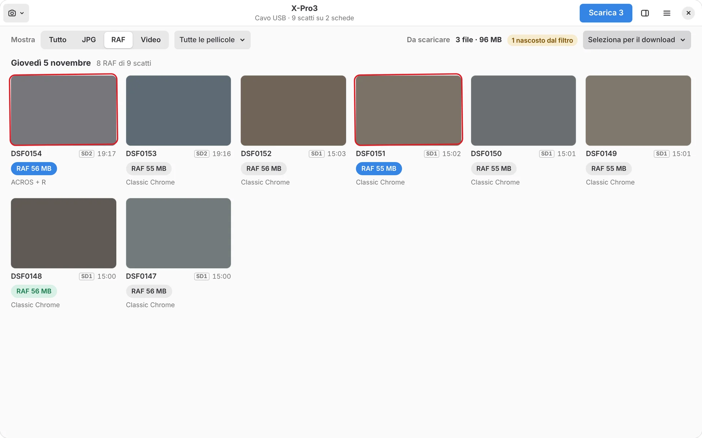
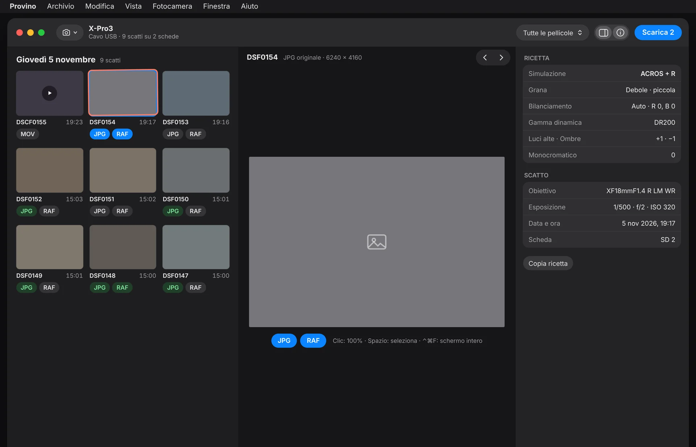
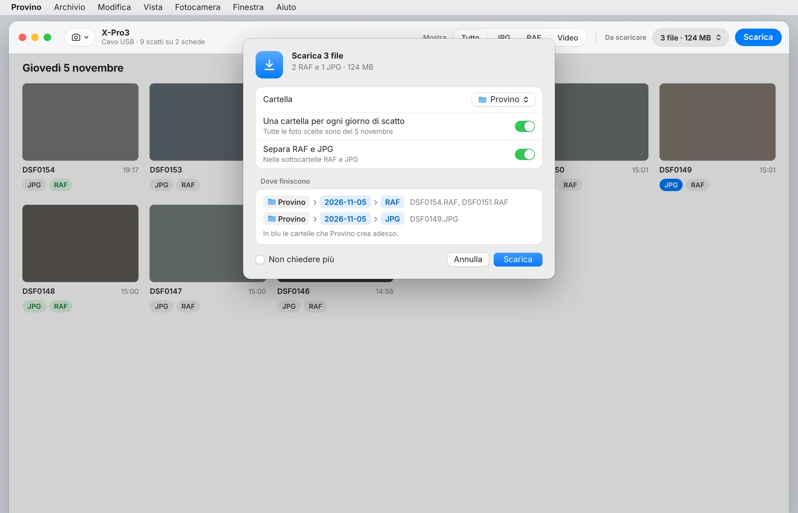
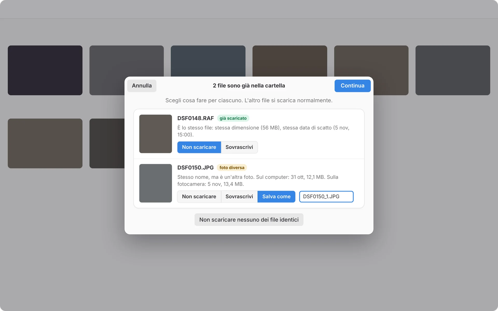

1. Installare1. Install
macOS
- Scarica il file .dmgDownload the .dmg fileDalla pagina delle versioni su GitHub.From the releases page on GitHub.
- Trascina Provino in ApplicazioniDrag Provino to ApplicationsCome per ogni app del Mac.Like any Mac app.
- Al primo avvioOn first launchSe il Mac avvisa che l'app viene da uno sviluppatore non identificato: Impostazioni di Sistema › Privacy e sicurezza › Apri comunque.If your Mac warns the app is from an unidentified developer: System Settings › Privacy & Security › Open Anyway.
Linux
- Scarica il file AppImageDownload the AppImage fileDalla stessa pagina delle versioni.From the same releases page.
- Rendilo eseguibileMake it executableClic destro › Proprietà › «Esegui come programma».Right-click › Properties › "Run as a program".
- Doppio clic per aprirloDouble-click to open itPensato per Fedora e Ubuntu con GNOME.Made for Fedora and Ubuntu with GNOME.
2. Collegare la fotocamera2. Connect the camera
All'avvio scegli la fotocamera e il modo di collegarla. Provino ti mostra i passi sullo schermo; eccoli anche qui.At launch, choose the camera and how to connect it. Provino shows the steps on screen; here they are too.
Lettore di schede · tutte le FujifilmCard reader · any Fujifilm
Il modo più veloce e quello che funziona con qualsiasi Fujifilm: un RAF si copia in meno di un secondo. Nella scelta iniziale scegli la tua fotocamera, oppure «Altra Fujifilm», e poi «Lettore di schede».The fastest way, and the one that works with any Fujifilm: a RAF copies in under a second. At start choose your camera, or "Other Fujifilm", then "Card reader".
- Togli la scheda dalla fotocamera e mettila nel lettoreTake the card out of the camera and put it in the readerLettore integrato nel computer o esterno: Provino la trova da solo. Sul Mac, la prima volta, consenti l'accesso ai volumi rimovibili.Built-in or external reader: Provino finds it by itself. On the Mac, the first time, allow access to removable volumes.
- Lasciala inserita fino alla fine del downloadLeave it in until the download is doneSe la togli prima, nessun file resta a metà; quando la rimetti, Provino la ritrova.If you remove it early, no half-written file is left; put it back and Provino finds it again.
Cavo USB · X-Pro3USB cable · X-Pro3
Il modo più veloce: un RAF arriva in pochi secondi, e vedi JPG, RAF e video di tutte e due le schede.The fastest way: a RAF arrives in a few seconds, and you see JPGs, RAFs and videos from both cards.
- Imposta la fotocamera come lettore di schedeSet the camera as a card reader MENU/OK›IMPOSTAZIONI›IMPOSTAZIONI CONNESSIONE›MODALITÀ CONNESSIONE›LETTORE SCHEDA USB MENU/OK›SET UP›CONNECTION SETTING›CONNECTION MODE›USB CARD READER
- Solo ora collega il cavo USB-COnly now connect the USB-C cableLascia la fotocamera accesa: Provino la trova da solo.Keep the camera on: Provino finds it by itself.
Cavo USB · X100VIUSB cable · X100VI
- Imposta la fotocamera come lettore di schedeSet the camera as a card reader MENU/OK›IMPOSTAZIONE NETWORK/USB›MODALITÀ CONNESSIONE›LETTORE SCHEDA USB MENU/OK›NETWORK/USB SETTING›CONNECTION MODE›USB CARD READER
- Controlla l'alimentazione USBCheck USB powerNello stesso menu, IMPOSTAZ. USB ALIMENTAZ./COM. su AUTO. Con ALIMENTAZIONE ON/COM. OFF i dati non passano.In the same menu, set USB POWER SUPPLY/COMM SETTING to AUTO. With POWER SUPPLY ON/COMM OFF no data goes through.
- Solo ora collega il cavo USB-COnly now connect the USB-C cableLascia la fotocamera accesa.Keep the camera on.
Wi-Fi di casa · X-Pro3Home Wi-Fi · X-Pro3
Senza fili e con il computer che resta su internet. Vedi JPG e RAF; un RAF arriva in circa mezzo minuto.No wires, and your computer stays online. You see JPGs and RAFs; a RAF takes about half a minute.
Scegli la rete di casa e inserisci la password: con Provino aperto, la fotocamera trova il computer e Provino lo registra da solo. Usa l'impostazione manuale, non quella semplice che chiede il tasto WPS del router.Pick your home network and enter the password: with Provino open, the camera finds the computer and Provino registers it by itself. Use manual setup, not the simple one that asks for the router's WPS button.
- Il computer è sulla rete Wi-Fi di casaYour computer is on your home Wi-FiLa stessa a cui si collega la fotocamera.The same one the camera connects to.
- Accendi la fotocamera e premi PLAYTurn the camera on and press PLAYCompaiono le foto.Your photos appear.
- Avvia il salvataggio automatico sul PCStart PC auto save
MENU/OK›MENU RIPRODUZIONE›SALVAT. AUTOM. PC
MENU/OK›PLAY BACK MENU›PC AUTO SAVE
La fotocamera si collega e Provino mostra le miniature.The camera connects and Provino shows the thumbnails.
Wi-Fi diretto · X-Pro3Direct Wi-Fi · X-Pro3
Senza router, ovunque tu sia. La fotocamera in questo modo mostra solo i JPG della scheda 1.No router, wherever you are. In this mode the camera only shows the JPGs on card 1.
- Avvia la comunicazione wirelessStart wireless communication PLAY›MENU/OK›MENU RIPRODUZIONE›COMUNIC. WIRELESS PLAY›MENU/OK›PLAY BACK MENU›WIRELESS COMMUNICATION
- Collega il computer alla rete della fotocameraJoin the camera's networkDall'icona Wi-Fi scegli la rete FUJIFILM-…. Finché sei collegato, il computer resta senza internet.From the Wi-Fi icon, choose the FUJIFILM-… network. While connected, your computer is offline.
- Se la fotocamera chiede conferma, premi OKIf the camera asks for confirmation, press OK
3. Scegliere le foto3. Pick your photos
Provino mostra tutti gli scatti della scheda, divisi per giorno. Il RAW e il JPG dello stesso scatto stanno in un solo provino, con le loro etichette.Provino shows every shot on the card, grouped by day. The RAW and JPG of each shot share one frame, each with its own label.
- Clic su JPG o RAF per sceglierli. Blu vuol dire scelto, verde vuol dire già scaricato. Lo scatto scelto ha il segno rosso, come a matita.Click JPG or RAF to pick them. Blue means picked, green means already downloaded. A picked shot gets the red pencil mark.
- Maiusc+clic su un'etichetta: sceglie tutta la serie dello stesso tipo fino a lì.Shift+click a label: picks the whole run of that type up to there.
- Trascina sulla griglia per scegliere con un riquadro.Drag across the grid to pick with a box.
- Da scaricare, nella barra: «Tutti i JPG», «Tutti i RAF», «Tutti i video», «Solo quelli non ancora scaricati», «Deseleziona tutto». Accanto vedi quanti file e quanti MB hai scelto.To download, in the toolbar: "All JPGs", "All RAFs", "All videos", "Only not downloaded yet", "Deselect all". Next to it you see how many files and MB you picked.
- Mostra: Tutto, JPG, RAF o Video, e il menu delle simulazioni pellicola. I filtri cambiano solo cosa vedi: quello che hai già scelto resta scelto, e Provino ti dice quanti file scelti sono nascosti.Show: All, JPG, RAF or Video, plus the film simulation menu. Filters only change what you see: what you picked stays picked, and Provino tells you how many picked files are hidden.

Filtro RAF attivo: 3 file scelti, 1 nascosto dal filtro.RAF filter on: 3 files picked, 1 hidden by the filter.
4. Foto grande e ricetta4. Large photo and recipe
- Clic su una foto: si apre accanto alla griglia, in grande. Doppio clic o F: a tutto schermo.Click a photo: it opens large next to the grid. Double-click or F: full screen.
- Clic sulla foto grande o F: zoom al 100%. Trascina per spostarti, Esc per tornare alla griglia.Click the large photo or F: 100% zoom. Drag to move around, Esc to go back to the grid.
- ← → per scorrere, Spazio per scegliere JPG e RAF dello scatto che stai guardando.← → to browse, Space to pick the JPG and RAF of the shot you're viewing.
- META: la ricetta completa (simulazione pellicola, grana, Color Chrome, bilanciamento del bianco, gamma dinamica, luci e ombre, colore e nitidezza) e i dati di scatto (obiettivo, tempo, diaframma, ISO, data e ora, scheda). Con Copia ricetta la copi come testo, da incollare dove vuoi.META: the full recipe (film simulation, grain, Color Chrome, white balance, dynamic range, highlights and shadows, color and sharpness) and the shooting data (lens, shutter, aperture, ISO, date and time, card). Copy recipe copies it as text to paste anywhere.

5. Scaricare5. Download
- Premi ScaricaPress DownloadSi apre la finestra con la cartella e le sottocartelle.A window opens with the folder and subfolders.
- Controlla dove finisconoCheck where they goUna cartella per ogni giorno di scatto (per esempio 2026-11-05) e, se vuoi, le sottocartelle RAF, JPG e VIDEO, solo per i tipi che scarichi. L'anteprima ti mostra il percorso di ogni file prima di partire.One folder per shooting day (for example 2026-11-05) and, if you like, RAF, JPG and VIDEO subfolders, only for the types you download. The preview shows each file's path before you start.
- ScaricaDownloadL'avanzamento è nella barra: file per file, con velocità e tempo che manca, e «Apri cartella» alla fine.Progress shows in the toolbar: file by file, with speed and time left, and "Open folder" at the end.

Se un file è già nella cartellaIf a file is already in the folder
Provino confronta dimensione e data di scatto e ti dice se è lo stesso file già scaricato oppure un'altra foto con lo stesso nome. Per ognuno scegli: Non scaricare, Sovrascrivi, oppure Salva come con un nome nuovo (per esempio DSF0150_1.JPG). Senza la tua scelta non sovrascrive mai niente.Provino compares size and shooting date and tells you whether it's the same file already downloaded or another photo with the same name. For each one choose: Don't download, Overwrite, or Save as with a new name (for example DSF0150_1.JPG). Without your choice it never overwrites anything.

Se il collegamento cadeIf the connection drops
Se il cavo si stacca o il Wi-Fi si interrompe, nella cartella non resta nessun file a metà. Quando ricolleghi, i file mancanti tornano selezionati: premi Scarica per riprendere. In Wi-Fi di casa, basta riavviare SALVAT. AUTOM. PC sulla fotocamera e i download in coda ripartono da soli.If the cable comes out or Wi-Fi drops, no half-written file is left in the folder. When you reconnect, the missing files are selected again: press Download to resume. On home Wi-Fi, just restart PC AUTO SAVE on the camera and queued downloads resume by themselves.
6. Preferenze6. Preferences
Su Mac: Provino › Impostazioni (⌘,). Su GNOME: menu principale ☰ › Preferenze.On Mac: Provino › Settings (⌘,). On GNOME: main menu ☰ › Preferences.
- Cartella dove scaricare, e se chiedere ogni volta prima del download.Folder to download into, and whether to ask every time before downloading.
- Una cartella per ogni giorno e Separa per tipo (RAF, JPG, VIDEO).One folder per day and Split by type (RAF, JPG, VIDEO).
- Lingua dell'app: automatica, italiano o inglese.App language: automatic, Italian or English.
- Fotocamere registrate e i loro collegamenti.Registered cameras and their connections.
- Tema chiaro, scuro o automatico: su Mac in Vista › Aspetto, su GNOME nel menu principale.Theme light, dark or automatic: on Mac in View › Appearance, on GNOME in the main menu.
7. Scorciatoie7. Shortcuts
Su Linux, al posto di ⌘ usa Ctrl.On Linux, use Ctrl instead of ⌘.
| Clic su una fotoClick a photo | Foto grande accanto alla grigliaLarge photo next to the grid |
| Doppio clicDouble-click · F | Schermo intero; nella foto intera, F alterna 100% e foto interaFull screen; in full screen, F toggles 100% and fit |
| ← → | Scatto precedente / successivoPrevious / next shot |
| ↑ ↓ | Riga sopra / sotto nella grigliaRow above / below in the grid |
| Spazio | Sceglie o toglie JPG e RAF dello scattoPicks or unpicks the shot's JPG and RAF |
| Maiusc+clicShift+click | Sceglie una seriePicks a run |
| ⌘A | Sceglie tutto quello che vediPicks everything you see |
| Esc | Esce dallo schermo intero; nella griglia toglie tutte le scelteLeaves full screen; in the grid clears all picks |
8. Se qualcosa non va8. Troubleshooting
Il lettore non trova la schedaThe reader doesn't find the card
Controlla che la scheda compaia nel Finder o in File: deve avere la cartella DCIM. Sul Mac, se avevi negato l'accesso ai volumi rimovibili, riattivalo in Impostazioni di Sistema › Privacy e sicurezza › File e cartelle.Check the card shows up in Finder or Files: it must have a DCIM folder. On the Mac, if you denied access to removable volumes, turn it back on in System Settings › Privacy & Security › Files and Folders.
Con il cavo la fotocamera non viene trovataThe camera isn't found over the cable
Imposta prima LETTORE SCHEDA USB e solo dopo collega il cavo. Se era già collegato: scollegalo, cambia l'impostazione e ricollegalo. Sulla X100VI controlla che l'alimentazione USB sia su AUTO. Usa un cavo USB-C che trasferisce dati, non solo di ricarica.Set USB CARD READER first, then connect the cable. If it was already plugged in: unplug, change the setting and plug it back. On the X100VI check USB power is set to AUTO. Use a USB-C cable that carries data, not a charge-only one.
Sul Mac si apre FUJIFILM X AcquireFUJIFILM X Acquire opens on the Mac
Chiudilo: occupa la fotocamera. Provino te lo propone da solo.Quit it: it holds the camera. Provino offers to do it for you.
In Wi-Fi diretto non vedo i RAFI can't see RAFs on direct Wi-Fi
È un limite della fotocamera: in questo modo la X-Pro3 mostra solo i JPG della scheda 1. Per i RAF usa il Wi-Fi di casa o il cavo.It's a camera limit: in this mode the X-Pro3 only shows the JPGs on card 1. For RAFs use home Wi-Fi or the cable.
Il Wi-Fi di casa non si collegaHome Wi-Fi doesn't connect
Controlla che computer e fotocamera siano sulla stessa rete, poi sulla fotocamera esci e avvia di nuovo SALVAT. AUTOM. PC. Se è una rete nuova, registra di nuovo il computer (vedi il punto 2).Check computer and camera are on the same network, then exit and start PC AUTO SAVE again on the camera. On a new network, register the computer again (see step 2).
La fotocamera si spegne a metàThe camera turns off halfway
Allunga lo spegnimento automatico: IMPOSTAZIONI › GESTIONE ALIMENTAZIONE › SPEGNIMENTO AUTOMATICO. I file non finiti non restano nella cartella.Extend auto power off: SET UP › POWER MANAGEMENT › AUTO POWER OFF. Unfinished files are not left in the folder.
Provino può cancellare le foto dalla scheda?Can Provino delete photos from the card?
No. Provino legge soltanto: non cancella, non modifica e non formatta mai nulla sulla scheda.No. Provino only reads: it never deletes, changes or formats anything on the card.
Come segnalo un problema?How do I report a problem?
Apri una segnalazione su GitHub e allega il file di log dell'ultimo avvio: Provino ne salva uno a ogni avvio, ed è quello che serve per capire cosa è successo.Open an issue on GitHub and attach the log file of the last run: Provino saves one each time it starts, and it's what explains what happened.
Alcuni nomi dei menu in italiano possono cambiare leggermente in base al firmware della fotocamera.Some menu names may differ slightly depending on the camera firmware.